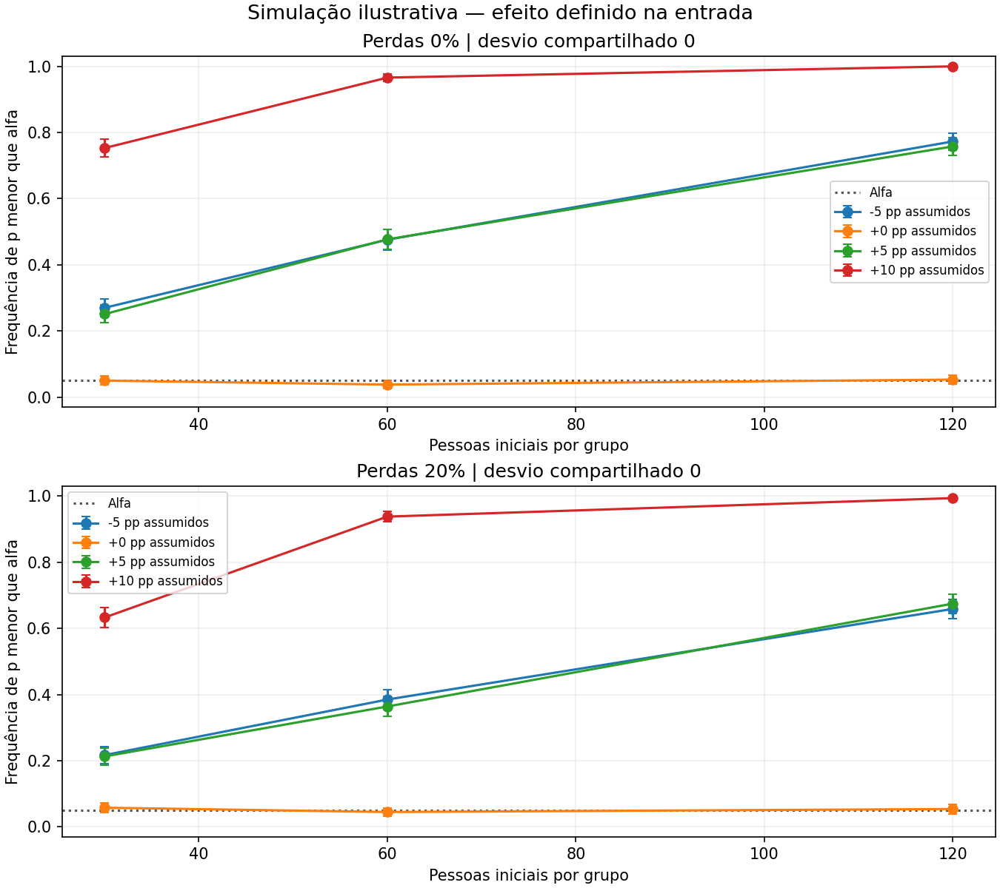

DADOS SINTÉTICOS — premissas ilustrativas, sem calibração ou validação das Arquiteturas.
Escolhas explícitas para explorar o desenho; não estimativas das Arquiteturas.

| Unidades por grupo | Pessoas totais | Efeito em pp | Perdas | Desvio turma | p menor que alfa | Inválidas |
|---|---|---|---|---|---|---|
| 30 | 60 | -5 | 0% | 0 | 27.0% | 0 |
| 30 | 60 | -5 | 20% | 0 | 21.7% | 0 |
| 30 | 60 | 0 | 0% | 0 | 5.0% | 0 |
| 30 | 60 | 0 | 20% | 0 | 5.8% | 0 |
| 30 | 60 | 5 | 0% | 0 | 25.1% | 0 |
| 30 | 60 | 5 | 20% | 0 | 21.3% | 0 |
| 30 | 60 | 10 | 0% | 0 | 75.3% | 0 |
| 30 | 60 | 10 | 20% | 0 | 63.3% | 0 |
| 60 | 120 | -5 | 0% | 0 | 47.6% | 0 |
| 60 | 120 | -5 | 20% | 0 | 38.5% | 0 |
| 60 | 120 | 0 | 0% | 0 | 3.8% | 0 |
| 60 | 120 | 0 | 20% | 0 | 4.5% | 0 |
| 60 | 120 | 5 | 0% | 0 | 47.7% | 0 |
| 60 | 120 | 5 | 20% | 0 | 36.4% | 0 |
| 60 | 120 | 10 | 0% | 0 | 96.6% | 0 |
| 60 | 120 | 10 | 20% | 0 | 93.8% | 0 |
| 120 | 240 | -5 | 0% | 0 | 77.3% | 0 |
| 120 | 240 | -5 | 20% | 0 | 65.9% | 0 |
| 120 | 240 | 0 | 0% | 0 | 5.3% | 0 |
| 120 | 240 | 0 | 20% | 0 | 5.4% | 0 |
| 120 | 240 | 5 | 0% | 0 | 75.8% | 0 |
| 120 | 240 | 5 | 20% | 0 | 67.5% | 0 |
| 120 | 240 | 10 | 0% | 0 | 100.0% | 0 |
| 120 | 240 | 10 | 20% | 0 | 99.4% | 0 |
# Relatório do laboratório de simulações DADOS SINTÉTICOS — premissas ilustrativas, sem calibração ou validação das Arquiteturas. Planejamento com participantes independentes Motor 0.1.0 | 24 cenários | 24.000 réplicas planejadas. ## Leitura do resultado Nos cenários nulos, a frequência de falsos positivos variou de 3.8% a 5.8%. Entre 12 cenários com benefício imposto, 8 ficaram abaixo do alvo de planejamento de 80%. Esse alvo é uma escolha, não exigência institucional. A frequência de rejeição não é a probabilidade de a teoria estar correta. Benefícios ou prejuízos foram definidos como entrada, não descobertos em alunos. O intervalo Monte Carlo descreve a incerteza numérica da frequência estimada; os percentis das diferenças são distribuição de estudos sintéticos, não intervalo de efeito real. ## Comparação dos cenários | Unidades por grupo | Pessoas iniciais no total | Efeito assumido em pp | Perdas | Desvio de turma | Frequência de p menor que alfa | Erro Monte Carlo | Válidas | | ---: | ---: | ---: | ---: | ---: | ---: | ---: | ---: | | 30 | 60 | -5 | 0% | 0 | 27.0% | 1.40% | 1000 | | 30 | 60 | -5 | 20% | 0 | 21.7% | 1.30% | 1000 | | 30 | 60 | +0 | 0% | 0 | 5.0% | 0.69% | 1000 | | 30 | 60 | +0 | 20% | 0 | 5.8% | 0.74% | 1000 | | 30 | 60 | +5 | 0% | 0 | 25.1% | 1.37% | 1000 | | 30 | 60 | +5 | 20% | 0 | 21.3% | 1.29% | 1000 | | 30 | 60 | +10 | 0% | 0 | 75.3% | 1.36% | 1000 | | 30 | 60 | +10 | 20% | 0 | 63.3% | 1.52% | 1000 | | 60 | 120 | -5 | 0% | 0 | 47.6% | 1.58% | 1000 | | 60 | 120 | -5 | 20% | 0 | 38.5% | 1.54% | 1000 | | 60 | 120 | +0 | 0% | 0 | 3.8% | 0.60% | 1000 | | 60 | 120 | +0 | 20% | 0 | 4.5% | 0.66% | 1000 | | 60 | 120 | +5 | 0% | 0 | 47.7% | 1.58% | 1000 | | 60 | 120 | +5 | 20% | 0 | 36.4% | 1.52% | 1000 | | 60 | 120 | +10 | 0% | 0 | 96.6% | 0.57% | 1000 | | 60 | 120 | +10 | 20% | 0 | 93.8% | 0.76% | 1000 | | 120 | 240 | -5 | 0% | 0 | 77.3% | 1.32% | 1000 | | 120 | 240 | -5 | 20% | 0 | 65.9% | 1.50% | 1000 | | 120 | 240 | +0 | 0% | 0 | 5.3% | 0.71% | 1000 | | 120 | 240 | +0 | 20% | 0 | 5.4% | 0.71% | 1000 | | 120 | 240 | +5 | 0% | 0 | 75.8% | 1.35% | 1000 | | 120 | 240 | +5 | 20% | 0 | 67.5% | 1.48% | 1000 | | 120 | 240 | +10 | 0% | 0 | 100.0% | 0.00% | 1000 | | 120 | 240 | +10 | 20% | 0 | 99.4% | 0.24% | 1000 | ## Direções para a pesquisa 1. Escolher a unidade real de atribuição: estudante ou turma. No modo turmas, o teste usa médias de turmas, evitando contar colegas como réplicas independentes. 2. Estimar a variabilidade, a qualidade da medida e as perdas com dados apropriados antes de recomendar tamanho de amostra. 3. Comparar benefícios pequenos, ausência de efeito e prejuízo. Um cenário favorável não comprova sua plausibilidade. 4. Planejar precisão, relevância pedagógica, retenção e transferência; não ampliar a amostra após olhar resultados apenas para atingir significância. 5. Manter a aplicação escolar e os procedimentos do mestrado alinhados com orientação e programa. ## Premissas e limites Os grupos são gerados da mesma população fictícia. Probabilidade inicial Beta(a,b), pré e pós com itens binomiais e ganho comum definido na configuração. O efeito adicional entra apenas no pós; probabilidades são limitadas a 1%–99%. No modo turmas, acrescenta-se ao pós uma variação normal compartilhada por turma, com desvio indicado na configuração. Esse desvio não é uma estimativa de ICC. A inferência ocorre entre turmas. Perdas são aleatórias e independentes de desempenho. Não se modelam perdas seletivas, mudanças entre séries, múltiplas escolas ou contaminação entre grupos. Réplicas sem dados suficientes são excluídas e contadas como inválidas. Não há modelo de cérebro, dança, mecanismo da cadência textual ou validação da cooperação. O motor atual orienta planejamento estatístico. Modelos mecanísticos ficam na trilha de desenvolvimento. O manifesto identifica código, configuração, ambiente e hashes dos arquivos. Hash é conferência de integridade, não certificação científica. ## Arquivos configuracao.json; resultados.json; resultados.csv; grafico.png; relatorio.html; manifesto.json. O conteúdo completo está no JSON; o resumo serve à consulta rápida.